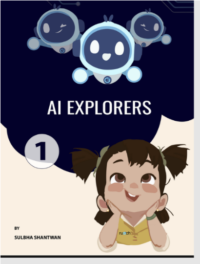
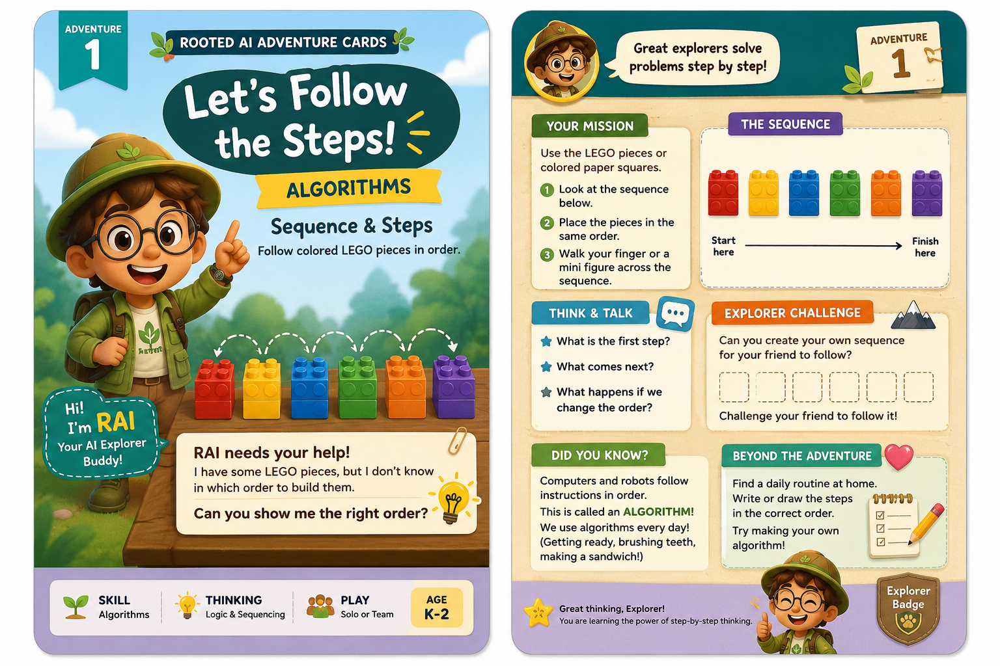
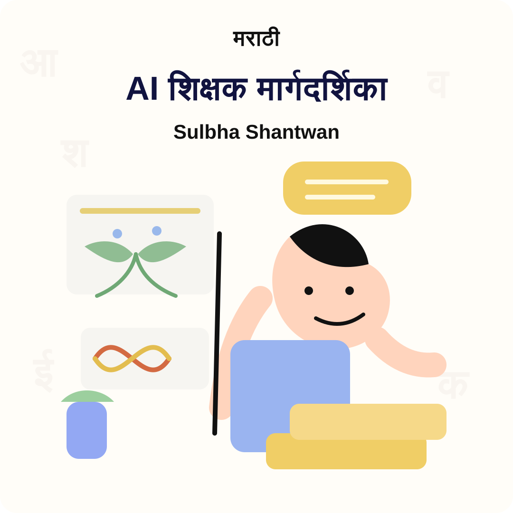
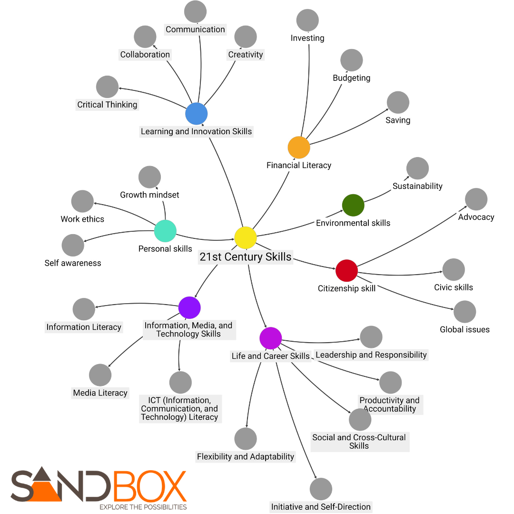

AI Explorers
Age-specific AI literacy resources that introduce children to emerging technology through characters, stories, and hands-on exploration.
Sulbha Shantwan
I explore how people learn deeply through stories, games, curriculum, workshops, research, parenting, and the human side of artificial intelligence.

My work begins with one question: how do we make learning meaningful enough to stay?
This is my personal learning universe: the ideas I am growing, the experiences I am designing, the research I am pursuing, and the questions that keep pulling me forward.

My story
How do we help learners truly connect with what they are learning? Over the years, that question became bigger. I designed games, created stories, built interdisciplinary experiences, trained teachers, led innovation projects, explored new technologies, became a homeschool parent, and returned to research.
Today, my work sits at the intersection of curriculum design, creativity, human development, and educational innovation.
In the field
A living gallery of workshops, classroom moments, learning experiments, and the communities that shape my work.
Portfolio
My projects move between classrooms, teacher rooms, research spaces, kitchen-table experiments, and the future of learning.

AI Adventure Cards
A playful, low-tech AI literacy series where young learners explore concepts like algorithms, patterns, data, decisions, and responsible use through stories, missions, and hands-on classroom challenges.

Age-specific AI literacy resources that introduce children to emerging technology through characters, stories, and hands-on exploration.
Story-led K-5 cards that turn AI ideas into missions, discussion prompts, unplugged activities, and playful problem-solving.

AI teacher guides and implementation material translated and adapted so educators can use new ideas in familiar language and context.

Curriculum architecture for skills such as creativity, collaboration, financial literacy, sustainability, citizenship, and digital fluency.

Practical professional development that helps educators use AI meaningfully without losing the human center of learning.
Curriculum in motion
These videos document curriculum work, classroom resources, and the way ideas become usable learning experiences.
Curriculum structures and learning resources for introducing AI in age-appropriate ways.
A look at the practical classroom materials behind the learning experience.
Playful learning
I design small, playable games that help learners explore ideas — play directly below or open the game in a new tab.
A short, playable game that introduces number sense and patterns.
A playable activity that helps learners compare and reason about large numbers.
My worlds
Rooted Labs and Sandbox are important parts of my journey, but this website is about the person connecting those threads: the educator who keeps asking what learning can become.
Teacher training
My workshops focus on usable classroom translation: how educators can understand AI, adapt resources, ask better questions, and bring future-ready skills into everyday teaching.

How I think
Align outcomes, competencies, standards, and developmental progression.
Build stories, simulations, activities, resources, and teacher-ready tools.
Design rubrics, feedback loops, assessment banks, and evidence of understanding.
Train educators, localize guides, and support implementation across contexts.
The thinking garden
I write and speak about learning, creativity, AI, future skills, human agency, homeschooling, research, and education systems.
Connect with me
If you want to invite me to speak, discuss a curriculum project, collaborate on research, or exchange ideas about learning and AI, I would love to hear from you.